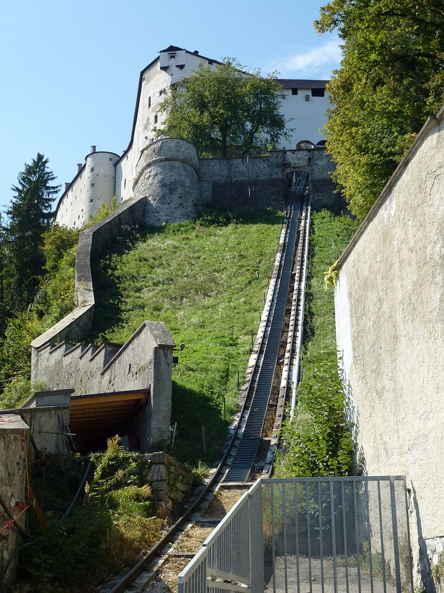
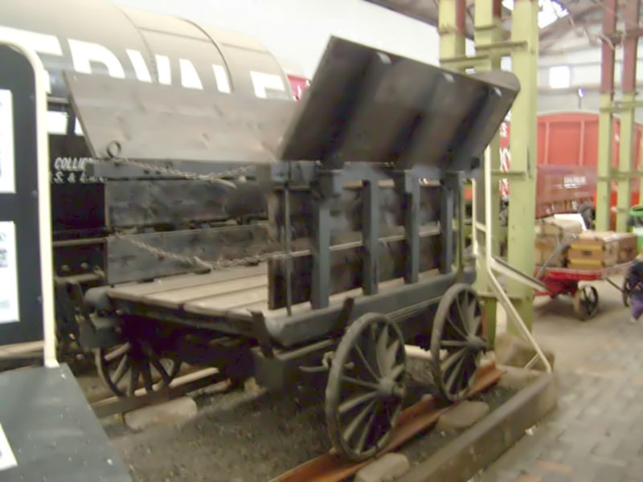
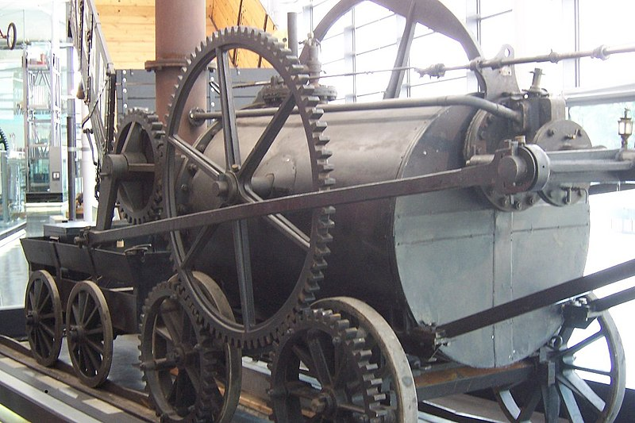

Tech: Now and Then

December 21st, 2020.

A modern train cruising upon the rails.
I was thinking about Christmas coming up, and I was reminded of the Polar Express, a classic book-turned-movie that's still fun to watch. But, that brought up a topic that I thought would be interesting. Where did the train begin? How were rails even conceived? Let's go ask the Greeks, the inventors of rails, that question.
The Greeks had a paved trackway that transported boats and other heavy things with wheeled carts that relied on manpower. The carts could stay on due to limestone grooves being created so that the cart wouldn't derail. It was supposedly used until 1st Century AD. There's no surviving area of the trackway, only records of it unfortunately.
The Reisszug, the oldest railway that still functions.
The next railway that's known is the Reisszug, which is a short line that's the oldest known wooden railway that still works, although there have been some adjustments to it. It was operated with a hemp rope that would be pulled with an animal or human that'd move it upward or downward the track. These kinds of railways were often used to transport ore tubs, or minecarts, to and from mines so the workers wouldn't have to go all the way up from the mines to deliver what they had to where it needed to go. The miners called these carts "Hunde", as they made a noise similar to what a dog makes.
A replica of the Little Eaton Tramway Wagon, which was constructed of cast iron.
Due to the unearthing of cast iron taking place during the 1760's, companies started to make metal tracks for the wagons to go along. These tracks were much more resistant to wear and tear than their wooden counterparts, and they required a little less maintenance. They also could now get trains to turn around using these tools, like using a balloon loop (a giant loop that turns the train around) or shifting tracks.
Cast iron was starting to break under the heavy loads, and these people started to realize that they needed better metal. Wrought iron replaced this in 1820, which was a much stronger metal that could undergo much more pressure. This iron did have a flaw though: The process in making it made "dross", which was a softness that would bend and flatten the material until it was completely unusable.
The Bessemer Process was then figured out, which allowed steel to be made very inexpensively. This caused the Great Expansion to happen in America due to the amount of steel that could be produced to bring tracks everywhere. Steel was starting to replace iron everywhere, and people realized that they could start to travel on these rails...
A replica of Trevithick's Engine, on display at the National Waterfront Museum.
James Watt, a Scottish inventor, patented a design for a steam locomotive. It was originally made for the purpose of pumping water out of the mines they were digging in, and then it became possible to power a wheel with it. Then, it became a stationary engine that could power cotton mills and many other machines that spurred the Industrial Revolution. A year after the patent, William Murdoch produced a self-propelled steam carriage.
The first working railway steam locomotive was built by Richard Trevithick in 1804, which hauled a train along the tramway of Penydarren ironworks. Unfortunately, his idea had to wait due to the weak railways at the time being built out of cast iron immediately breaking under the weight of the engine.

Matthew Murray's rack locomotive Salamanca.
In 1812, just 8 years after the failure of the first attempted locomotive with a steam engine, Matthew Murray made a successful locomotive that could move without breaking the rails. It also stayed on the track using teeth that would grab parts of the track and push the vehicle forward. The next major upgrade was the introduction of Diesel power. In 1888, William Dent Priestman made a petroleum engine that was able to have a power of 20 horsepower, impressive for the time.
The world's first functional diesel-electric railcars were made in 1914, which were able to transport people where they needed to go at a much faster and more efficient way than that of the average horse.
That's pretty much it. I could go into more, but so many people are making so many minor advancements that this would be thousands of paragraphs long. Pretty much, trains were able to transport people and things on decently strong tracks the more time passed. It was neat.